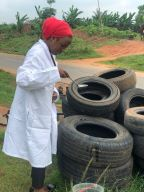
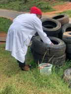
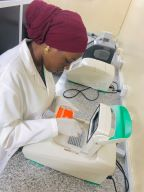
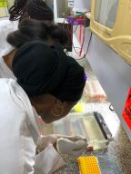
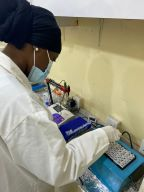
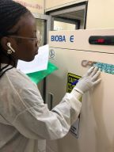

There were various divisions in charge of different duties for the operation of the department.
I was posted to the Molecular Entomology Laboratory.
I resumed for the externship program on Monday,14th July 2022 which ran through till Friday,
30th September 2022. I started working at the Molecular Entomology Laboratory on Monday, 14th
July till Friday, 23rd September,2022.
After I collected my acceptance letter into the organization. I was introduced to the staff and I
was introduced to the laboratory routine, laboratory guidelines, laboratory maintenance and the
general precautions of the Molecular Entomology and Vector Control Research Laboratory.
Over the week I was able to learn about molecular biology which seeks to understand the molecular
basis of biological activity in and between cells including molecular synthesis, modification,
mechanisms and interaction. I also learnt that at the Molecular Entomology and Vector control
research laboratory we research into malaria transmission rate in Nigeria which involves the
identification of mosquito vectors such as using polymerase chain reaction (PCR), Checking for
blood meal source in blood fed mosquitoes, Insecticide resistance or susceptibility test using
World Health Organization (WHO) or Center for Disease Control (CDC) method.
I was shown the laboratory equipment and how it works they include vortex machine, weighing balance,
centrifuge, plate reader, UV light, Thermal cycler which is used to run polymerase chain reaction
(PCR) tests.
Lecture on morphological identification of Anopheles Mosquito. I learnt how to
morphologically identify mosquitoes based on their features.
Over the week, I did the identification of Anopheles gambiae, Aedes mosquito, Anopheles funestus based on their
morphological features which include the head, the thorax, the abdomen, the wings and legs
of the mosquitoes. I was taught the process of charting the temperature readings of the fridge
and freezers daily, laboratory cleaning and decontamination.
During this week I visited the public health and epidemiology department insectary of the
institute. I went for field work I was taught how to collect samples from the field.
I assisted in collecting matured Aedes mosquito samples from Epe Local Government in Lagos state, with the
use of an aspirator and BG–Sentinel trap. I learnt how to pick up both stage 1 and stage 2 Aedes
larva from stagnant water in tyres and interlock containers with the use of laboratory equipment
during the field work at Ibeju Local Government Lagos state.
I also stored the samples collected from the field at the insectary.
I was assigned to the Vector Control Research Laboratory. I learnt about the Preparation of
Reagents and Buffer solutions at the molecular entomology laboratory which includes; 0.5X
Tris/Borate/EDTA (TBE) buffer solution for gel electrophoresis, 1X buffer saline (PBS) for
ELISA test.
I also learnt that Casein, Sodium hydroxide (NaOH) and phenol red was added to
phosphate buffer saline (PBS) to prepare a blocking buffer for sporozoite detection during the
test. I also learnt that IGEPAL CA-630 which is responsible for the solubilization, isolation and
purification of membrane protein complexes was added to phosphate buffer saline (PBS) to prepare
a grinding buffer for the test. Polysorbate 20 (Tween 20) was added to phosphate buffer saline
(PBS) to prepare a washing buffer.
I prepared TBE buffer solution with agarose gel and distilled
water for gel electrophoresis. Charting the temperature readings of the fridge and freezers daily.
Laboratory cleaning and decontamination.
At the Vector Control and Research Laboratory, I learnt how to prepare mosquito samples for
different assays which involves cutting of mosquito samples into head, thorax and abdomen
with the use of forceps and laboratory blades.
Over the week I also learnt how to grind mosquito thorax in grinding buffer solution to determine the infective stage of Plasmodium falciparium in
the guts of Anopheles mosquito samples. I grinded mosquito abdomen in phosphate buffer saline(PBS).
Charting the temperature readings of the fridge and freezers daily. Decontamination of
the laboratory.
Laboratory cleaning and decontamination. Lectures on the principles behind Polymerase Chain Reaction (PCR) and the techniques. I was opportuned to learn that polymerase chain reaction technique is based on the enzymatic replication of DNA and also in polymerase chain reaction a short segment of DNA is amplified using primer mediated enzymes.
I also learned about the components of polymerase chain reaction which includes DNA template, DNA polymerase also
called TAQ polymerase is an enzyme used in polymerizing, Oligonucleotide primers and Buffer
system which is made up of magnesium chloride and potassium to provide optimum conditions
for DNA denaturation and renaturation. It is also important for polymerase activity and stability.
I learnt about Multiplex polymerase chain reaction. I helped during the practical work on polymerase chain reaction (PCR).
During this week I learnt how to identify mosquito species using polymerase chain reaction
(PCR). I identified the following mosquito species; Anopheles gambiae, Anopheles arabiensis,
Anopheles funestus, using the multiplex polymerase chain reaction (PCR) method. Charting the
temperature readings of the fridge and freezers daily.
Cleaning and decontamination of the laboratory.
Identification of knockdown resistance (KDR) genes in mosquito using multiplex polymerase chain reaction (PCR). I was taught how gene expression analysis was done on Anopheles gambiae and Anopheles funestus using the multiplex polymerase chain reaction (PCR) method.
I was educated on Gel electrophoresis which is a method used for the separation and analysis of biomolecules
(DNA, RNA, Proteins) and their fragments based on their size and charge. It is performed after the
amplification of DNA via polymerase chain reaction (PCR).
I learned how to characterize and differentiate genetic elements based on their molecular weight using agarose gel electrophoresis. Practical work on gel
electrophoresis preparation.
I was also taught how to interpret results after gel electrophoresis which is viewing of the samples under ultraviolet light box also called gel documentation system. Laboratory decontamination and charting the temperature readings of the fridge and freezers daily.
I was assigned to the Vector Control and Research Laboratory. Laboratory cleaning and
decontamination. Lecture on ELISA by I.T supervisor.
I learnt the process of ELISA (Enzyme-linked Immunosorbent Assay) test. ELISA is a plate –based assay technique designed for
detecting and quantifying soluble substances such as proteins, antibodies and hormones.
During the week I was taught how to use the direct method of ELISA to detect blood meal source of an infected mosquito and also the sandwich method to detect Plasmodium falciparum circumsporozoite proteins in malaria infected mosquitoes.
I was educated and trained on how to expose mosquitoes to different insecticides and how to record the knockdown resistance rate of the mosquitoes.
At the Molecular Entomology and Vector Control Research laboratory, I was lectured on DNA extraction of mosquito samples. I learnt how to extract DNA from mosquito samples using a genomic DNA extraction kit which contains lysis buffer, washing buffer and elution buffer and also a given DNA extraction procedure.
I was also able to learn how to run polymerase chain reaction (PCR) test for the extracted DNA to know the best annealing temperature condition to
give optimum PCR results for knock down resistance (KDR) mutation identification. Charting the temperature readings of the fridge and freezers daily.
At the Molecular Parasitology Research laboratory, I was introduced and shown some reagents
used for snail DNA extraction and other laboratory equipment. I was able to learn the genomic
DNA extraction from snail tissue using CTAB extraction buffer and a given procedure.
Laboratory cleaning and decontamination.
In the vector control research lab:
Morphological identification of mosquitoes prior to PCR assays not only saves time and money
in the laboratory but also ensures that data received by malaria vector control program are useful
for targeting the major vectors.
The morphological identification is done with a microscope using a guide by Coetzee, M., Craig, M.
and le Sueur, D (2000) describing the keys for identification of the anopheles species.
PBS is a balanced salt solution used for a variety of cell culture application, such as washing cells before dissociation, transporting cells or tissue, diluting cells for counting and preparing reagents, immunoassays, for protein purification. Phosphate buffered saline (PBS) is non-toxic solution used in many biological laboratories.
Unlike water, PBS prevents cell rupturing or shriveling up due to osmosis. It helps to maintain constant ph. PBS tablets are premeasured tablets for convenient preparation of 1X PBS solution. PBS buffer contains 10mM phosphate buffer, 137mM sodium chloride and 2.7mM potassium chloride. Each tablet prepares 100ml of a 1X PBS Solution.
PREPARATION: 1 tablet for 100ml of distill H2O; Put 100ml of distill H2O into the beaker,
put a tablet inside the H2O, put a magnetic bead in a distilled H2O to erase separately and
remove.
Put the magnetic bead into the 100ml of distilled H2O containing the PBS and place the
beaker on the heat stir and stir using the stirring turner until it dissolves.
Gel electrophoresis is a core technique used for genetic analysis and separation of nucleic acid. It separated the nucleic acid (DNA or RNA). It is used for DNA extraction. There are many types of gel electrophoresis but it is agarose gel that we use in the laboratory.
Charged molecules move through a gel when an electric current is passed across it. An electric current is applied across the gel so that one end of the gel has a positive charge and the other end has a negative charge.
Once the DNA has migrated far enough across the gel, the electrical current is switched off. Then the gel is removed from the electrophoresis tank. To visualize the DNA, the gel is stained with a fluorescent dye that binds to the DNA and it is placed on an ultraviolet transilluminator which will show up the stained DNA as bright bands.
Alternatively, the dye can be mixed with the gel before it is poured. If the gel has run correctly the banding pattern of the DNA marker/size standard will be visualized. It is then possible to judge the size of the DNA in your sample by imagining a horizontal line running across from the bands of the DNA marker. You can then estimate the size of the DNA marker the sample by matching them against the closest band in the marker.





